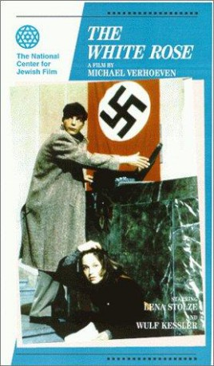

#3789 Die Weiße Rose
 
 IMDB-Wertung: 7.2 / 10
IMDB-Wertung: 7.2 / 10  Metascore: 0
Metascore: 0 
"Ein kleiner Lichtstreifen in Deutschlands dunkelster Zeit. München 1942. Eine Gruppe von fünf Studenten, unter ihnen die Geschwister Hans und Sophie Scholl, ruft mit Flugblättern, unterzeichnet mit "Die weiße Rose", zum Widerstand gegen Hitler auf. Unter Einsatz ihres Lebens bringen sie die Flugblätter auch in andere Städte. Nachts schreiben sie "Nieder mit Hitler" an die Hauswände. Während sich die Schlinge der Gestapo immer enger zieht, nehmen sie Kontakt zu anderen Gruppen und zu Widerstandskreisen in der Wehrmacht auf. Im Frühjahr 1943 schlägt die Gestapo zu. Der Volksgerichtshof unter Freisler hat das letzte Wort."
Jahr: 1982
Dauer: 124 Minuten
FSK: 12
Land: West-Deutschland Studio: Filmverlag der AutorenTonspuren:
Untertitel:
Auflösung: 1080p (1792x1080) Größe: 8949 MB
Genre: Thriller, Drama, Krieg, Krimi, Geschichte, Biographie
Regisseur: Michael Verhoeven
Drehbuch: Arturo Pérez-Reverte
Soundtrack:
Darsteller:
 Ulrich Tukur als Willi Graf
Ulrich Tukur als Willi Graf Klaus Münster als
Klaus Münster als  Lena Stolze als Sophie Scholl
Lena Stolze als Sophie Scholl- Wulf Kessler als Hans Scholl
- Oliver Siebert als Alex Schmorell
- Werner Stocker als Christoph Probst
- Martin Benrath als Prof. Kurt Huber
- Anja Kruse als Traute Lafrenz
- Ulf-Jürgen Wagner als Fritz
- Mechthild Reinders als Gisela Schertling
- Peter Kortenbach als Falk Harnack
- Gerhard Friedrich als Herr Scholl
- Sabine Kretzschmar als Frau Scholl
- Heinz Simon Keller als Werner Scholl
- Susanne Seuffert als Inge Scholl
- Christine Schwarz als Elisabeth Scholl
- Beate Himmerlstoss als Herta Probst
- Mónika Madras als Clara Huber
- Hans-Jürgen Schatz als Studentenführer
- Werner Schnitzer als Rektor Prof. Dr. Wüst
- Reinhold Olszewski als Gauleiter Giesler
- Ágnes Csere als Lubjanka
- Jörg Hube als Oberregierungsrat
- Joachim R. Iffland als Willi Bollinger
- Markus Lambert als Wittenstein
- Jean-Paul Raths als Heinz Bollinger
- Michael Schech als Hubert Furtwängler
- Axel Scholtz als Hausmeister Jakob Schmid
- Helmut Alimonta als
- Mária Bakó als
- Max Grießer als
- Wilfried Klaus als
- Jan Köster als
- Rainer-Christian Mehring als
- György Mádaly als
- Hubert Münster als
- Franz Rampelmann als Gestapo agent
 Karl Scheydt als
Karl Scheydt als - Inge Schulz als
- Elemér Tarsoly als
- Lis Verhoeven als
Datei: X:\1982\Weiße Rose, Die (1982, FSK12, 1792x1080).mkv seit 13.06.2016
Festplatte: HD 1980-1986
 Es gibt insgesamt 31 Filme in der Gruppe '1982'
Es gibt insgesamt 31 Filme in der Gruppe '1982'